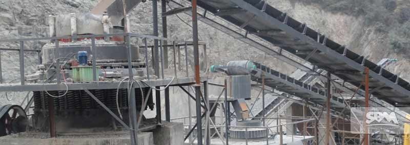

Ore milling equipment refers to the series of products in mining machinery, such as crushing equipment, milling equipment, sand making equipment and mineral processing equipment. Mining equipment is widely used in many sectors such as mining, roads, railways, smelting, building materials, water conservancy and chemical industries. At present, the commonly used ore dressing equipments include flotation machines, classifiers, magnetic separators, vibrating screens, dryers, and the like. These mining equipments have the characteristics of large crushing ratio, uniform product size, simple structure, reliable operation, simple maintenance and economical operation.
Ore milling equipment is a machine that processes ore and makes low-quality ore useful. Separate valuable minerals from gangue. In a narrow sense, it is used directly for machinery such as mineral mining and rich selection. Including mining machinery and mineral processing machinery. In a broad sense, prospecting machinery also belongs to mining machinery.
Mining equipment is one of the important basic industries for the supply and processing of solid raw materials, materials and fuels. It serves important basic industrial sectors such as black and non-ferrous metallurgy, coal, building materials, chemicals, and nuclear industry. Its products are in transportation and railways. There are also a large number of applications in the basic construction of infrastructure such as construction, water conservancy and hydropower. Under the support of multi-disciplinary integration of computer technology and network technology, mining equipment is oriented to economic construction. Driven by market demand, in the harmonious development of human and nature, mining machinery has become digital, intelligent, ecological and pleasant. The direction of development.
With the successful application of physical chemistry in metallurgy, metallurgy has moved from technology to science, so there is a metallurgical engineering specialty in the university. Pyrometallurgy is a metallurgical process carried out under high temperature conditions. Some or all of the minerals in the ore or concentrate of ore milling equipment undergo a series of physical and chemical changes at high temperatures to form another form of compound or element, which is enriched in gas, liquid or solid products to achieve the desired capture. The purpose of separating the metal from the gangue and other impurities.
In the face of the current huge opportunities and challenges, China's mining machinery industry must conform to the trend of the times, in accordance with the development trend of international and domestic mining machinery, work hard on R&D innovation, and comprehensively improve the scientific and technological content of mining machinery as soon as possible. In the future, it will be the best time to lay the foundation for China to achieve a strong mining machinery. Actively facing, positive actions, we will not be passive in the face of fierce competition.
Although the industry holds different views on the key directions of the development of China's mining machinery, it is generally believed that the following points will be the future development direction of mining machinery technology, which is as follows:
After independent innovation, we will develop digital, intelligent, ecological and integrated mining machinery, realize high-end complete sets of major equipment, realize sublimation of mining machinery technology, improve the utilization rate of minerals, change the status of high pollution and high consumption of mineral processing, and promote products. Structural adjustment, building a good ecological civilization and circular economy is of great significance.
Maintenance of ore milling equipment is not just about adding lubricants in a timely manner, tightening loose screws, etc. Repairs and adjustments are also part of the maintenance of the equipment. These include adjustments to engine throttle, repair and replacement of liner and hammer wear, repair and adjustment of hydraulic cylinders, seals, etc., as well as replacement of lubricants and adjustments and repairs to various operations and controls.